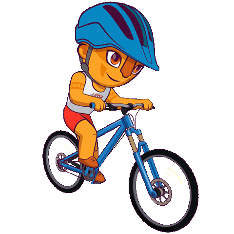

Profile
Skills
Contact
Green India,Clean India🌱

I'm Aadil
A Web Developer.


I am an Web developer and java programmer
I love to study human psychology behaviour and hangout with friends.
 |
Coding:Computer coding is an important skill in the current job market. Learning to write computer code can be a valuable skill in a wide variety of industries. If you are interested in adding computer coding to your list of professional abilities, it’s helpful to consider some skills associated with it. In this article, we focus on six skills useful in computer coding and how to add them to a resume. |
Gaming:Online gaming can also help expand and improve gaming knowledge and also experience. Online gaming also encourages competition. One player competes against others playing the same game so as to win more money. Another advantage of online gaming is that it makes a player mentally active and sharper too. |
 |
|  |
Cycling:Cycling is mainly an aerobic activity, which means that your heart, blood vessels and lungs all get a workout. You will breathe deeper, perspire and experience increased body temperature, which will improve your overall fitness level. ... increased cardiovascular fitness. increased muscle strength and flexibility. |